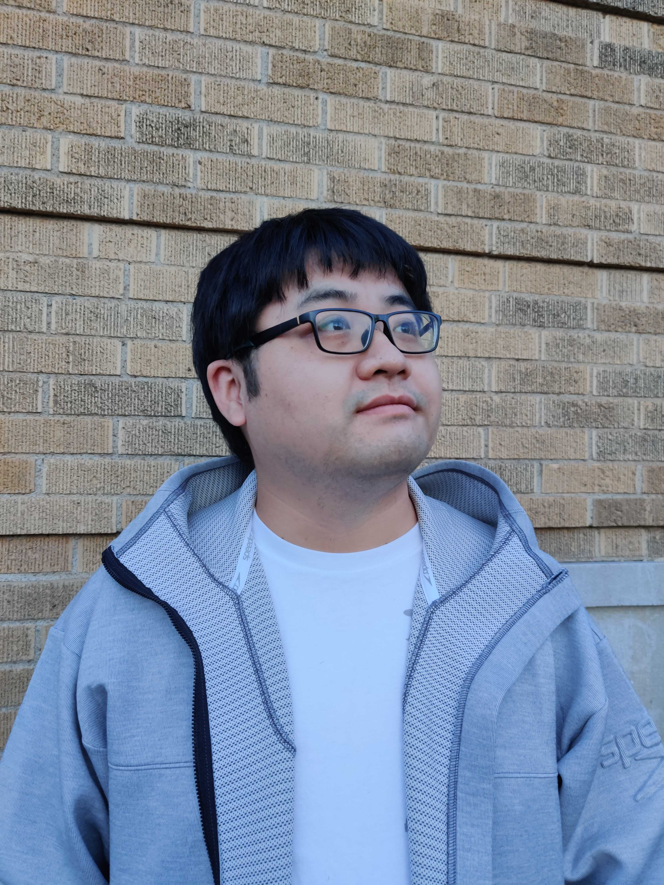

Tian GaoPh.D. Candidate
Dept. of Computer Science and Engineering
|
 |


Biography
I'm a Ph.D. student in Computer Science from University of Nebraska - Lincoln. I'm seeking a full-time position as a Machine Learning Engineer/Data Scientist/Applied Scientist.
I am a solid software engineer and data scientist with experience in machine learning algorithms (two years as a Machine Learning Engineer and five years as a Research Assistant). As a Machine Learning Engineer, I led the development of machine learning algorithms to prevent fraud. I implemented Logistic Regression models based on 30 million purchasing records using Hadoop and achieved high accuracy in fraud detection. As a Research Assistant, I headed the design and implementation of end-to-end solutions to plant traits extraction problems using deep learning and computer vision algorithms. I also have development experience in Matlab, HTML, JavaScript. Moreover, I have professional experience cooperating with experts from various domains, code review, and software document design/writing.
Please contact me if there are available positions.
My resume can be downloaded here.
Experience
-
University of Nebraska - LincolnJul. 2016 – Present
Graduate Research Assistant
-
E-commerce China Dangdang Inc. (dangdang.com)Jul. 2012 – Aug. 2014
Machine Learning Engineer (Full-time)
Education
-
University of Nebraska - Lincoln, Lincoln, Nebraska, USAJul. 2016 – Present
Doctor of Philosophy, Computer Science
-
University of Science and Technology of ChinaSep. 2009 – Jul. 2012
Master's degree, Computational Mathematics
-
AnHui UniversitySep. 2005 – Jul. 2009
Bachelor's degree, Computational Mathematics
Selected Publications [Google Scholar]
-
Interactive Visualization of Hyperspectral Images Based on Neural Networks
Feiyu Zhu, Yu Pan, Tian Gao, Harkamal Walia, Hongfeng Yu
IEEE Computer Graphics and Applications (CG&A), 2021.
-
Wild emmer introgressions alter root-to-shoot growth dynamics under water stress
Harel Bacher, Tian Gao, Kan Liu, Balpreet Dhatt, Tala Awada, Chi Zhang, Assaf Distelfeld, Hongfeng Yu, Zvi Peleg, Harkamal Walia
Plant Physiology, 2021.
-
Plant Event Detection from Time-Varying Point Clouds
Tian Gao, Jianxin Sun, Feiyu Zhu, Henry Akrofi Doku, Yu Pan, Harkamal Walia, Hongfeng Yu
IEEE International Conference on Big Data (Big Data), 2019.
-
PI-Plat: a high-resolution image-based 3D reconstruction method to estimate growth dynamics of rice inflorescence traits
Jaspreet Sandhu, Feiyu Zhu, Puneet Paul, Tian Gao, Balpreet K Dhatt, Yufeng Ge, Paul Staswick, Hongfeng Yu, Harkamal Walia
IEEE International Conference on Big Data (Big Data), 2019.
-
3D reconstruction of plant leaves for high-throughput phenotyping
Feiyu Zhu, Suresh Thapa, Tian Gao, Yufeng Ge, Harkamal Walia, Hongfeng Yu
IEEE International Conference on Big Data (Big Data), 2018.
-
A systematic approach to RNA-associated motif discovery
Tian Gao, Jiang Shu, Juan Cui
BMC genomics, 2018.
-
Dynamic and modularized microRNA regulation and its implication in human cancers
Jiang Shu, Bruno Vieira Resende e Silva, Tian Gao, Zheng Xu, Juan Cui
Scientific reports, 2017.